Every feature looks statistically important on its own — until you check whether they're all telling you the same thing.
Data Analysis is the science of collecting data, transforming and interpreting it to derive useful insights and support better decisions. This is one of my first attempts at detailed data analysis. I hope it serves as a good illustration for anyone looking to try out data analysis themselves. Or you can cherish the aesthetic and talkative plots in the blog.
The Dataset
8,760 rows, one per hour, covering a full year of Seoul's public bike-share system. Alongside the target —
Rented Bike Count — sit nine numerical features (Hour, Temperature,
Humidity, Wind speed, Visibility, Dew point temperature,
Solar Radiation, Rainfall, Snowfall) and two categorical ones
(Seasons, Holiday).
One standing rule, applied everywhere from here on: rows where Functioning Day == "No" are dropped.
Rentals are always exactly 0 there by definition — a data-collection artifact, not a low-demand signal. Leaving them in the dataset with zero rental bike counts can lead to a biased dataset.
Descriptive Analysis: What Happened?
Since the target variable is the rented bike count, most of our exploratory analysis will be focused on it.
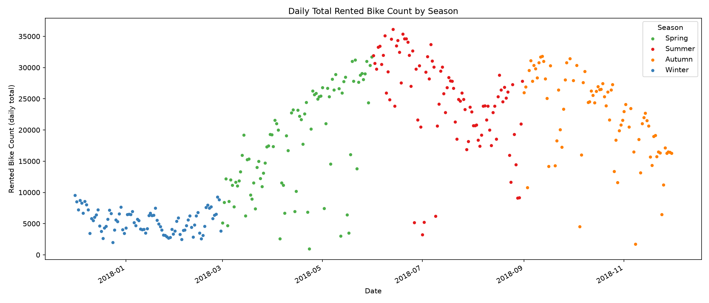
There is a very clear seasonal pattern observable with smooth transitions indicating the importance of seasonal shifts in the cycle renting behavior of the citizens of Seoul.
Summer averages 1,034 rentals/hour against Winter's 226 — a 4.5× ratio in raw means. The formal test run later
(Kruskal-Wallis on Seasons) confirms this as the largest categorical effect measured in this
dataset: epsilon-squared = 0.297, the highest effect size of any feature in the null-hypothesis screen below.
Hour
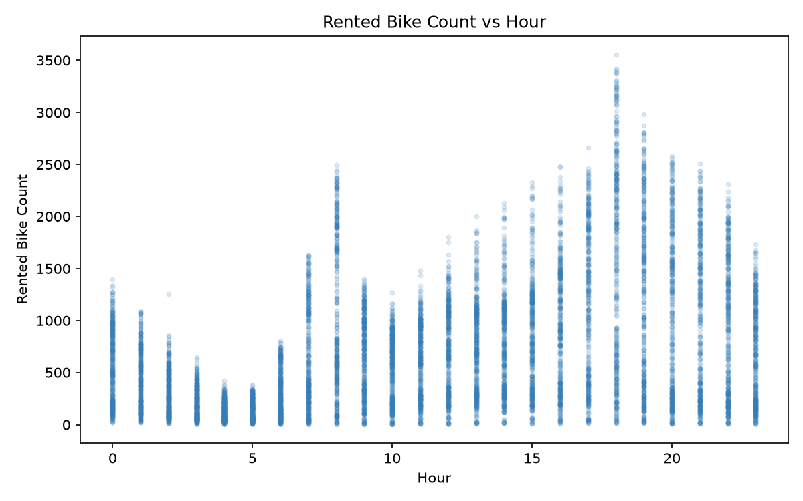
The hourly profile is bimodal: a narrow morning peak around 8:00 (≈1,016 rentals/hour), a larger and broader evening
peak around 18:00 (≈1,503/hour, the daily maximum), and an overnight trough around 4:00 (≈133/hour, the daily minimum).
That shape is consistent with expected commuting patterns. Another closely related feature to Hour is
Solar Radiation, and we observe a very strong relationship visually in the graph below. We shall
formalize this correlation later in the diagnostic section.
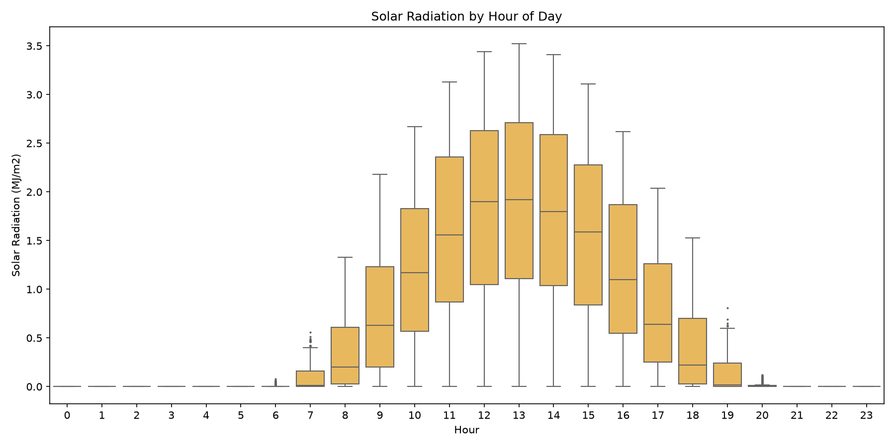
Temperature and Dew Point: two sensors, one signal
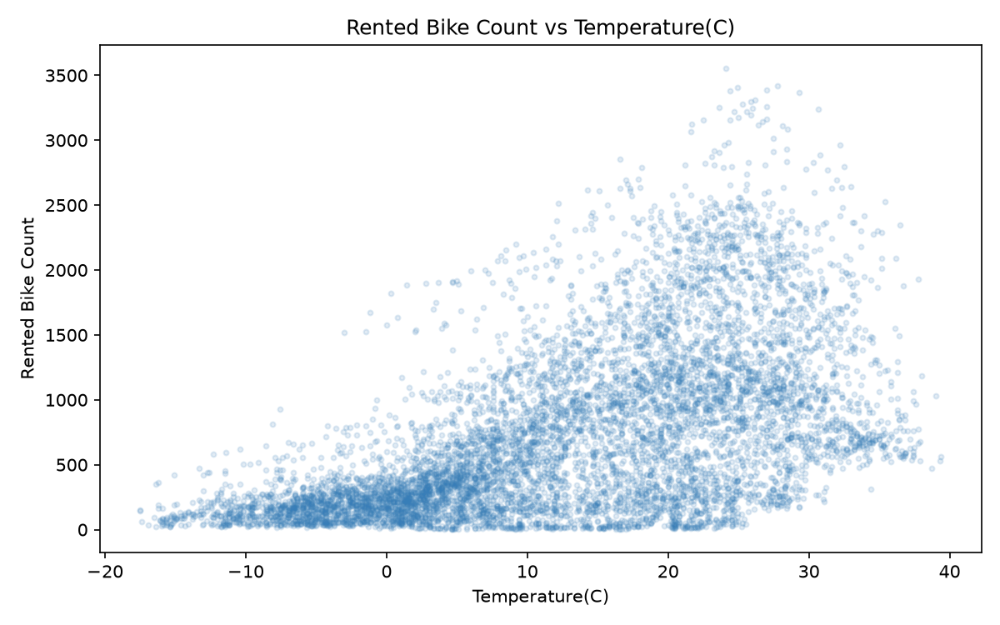
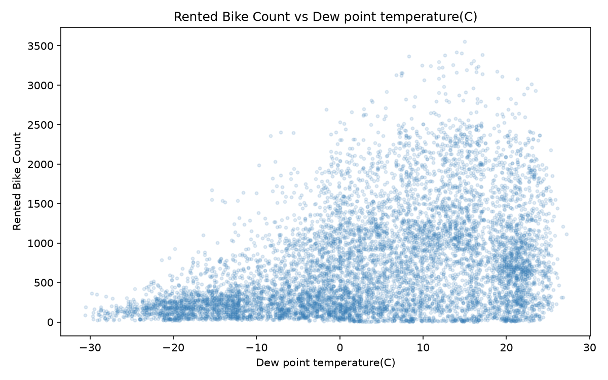
Side by side, Temperature and Dew Point temperature produce visually similar scatters — comparable rise, comparable spread. Are these indeed correlated or is it a statistical illusion? We answer this in the diagnostic analysis later.
Rainfall and Snowfall — and the Wall of Zeroes
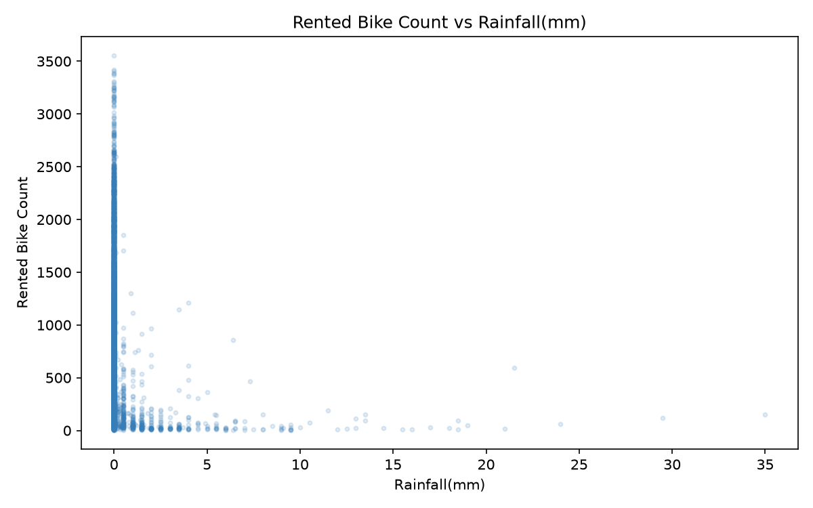
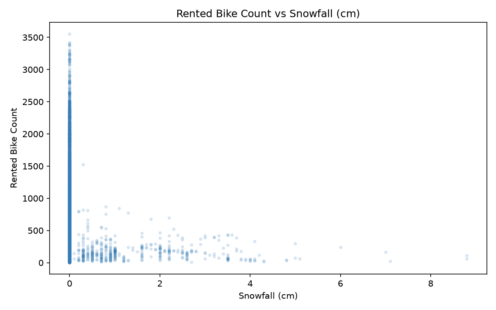
In both scatter plots, the large majority of points sit stacked on the x = 0 line (dry hours). The remaining nonzero hours form a sparse cluster at low rental counts. This is called zero-inflation. Does rainfall actually affect rented bike count, or is it simply the absence of rain on most days that creates such an illusion? Later tests instead split each feature into a zero group and a nonzero group and compare those with a rank-based test (Mann-Whitney U), which doesn't assume either group is normally distributed and establishes any effect of these features on rented bike count.
Visibility, Solar Radiation, Wind speed, and Humidity: the low-signal group
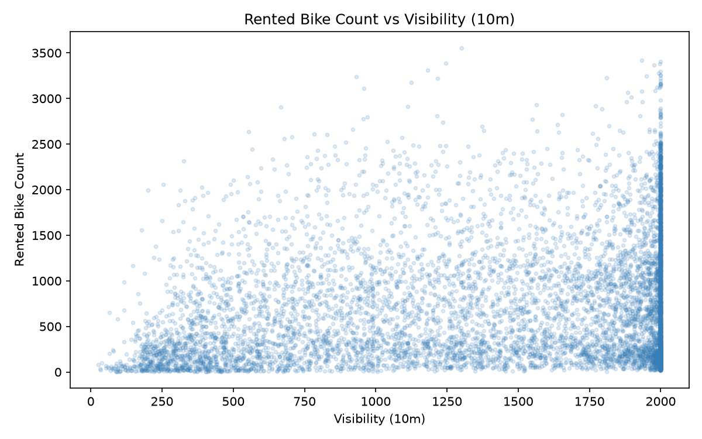
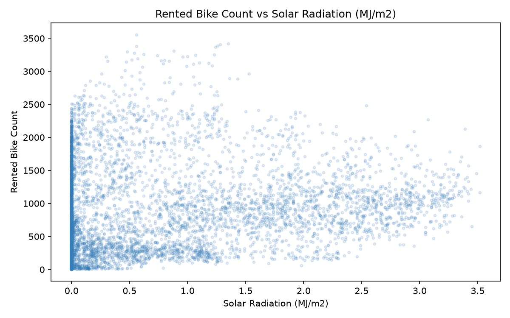
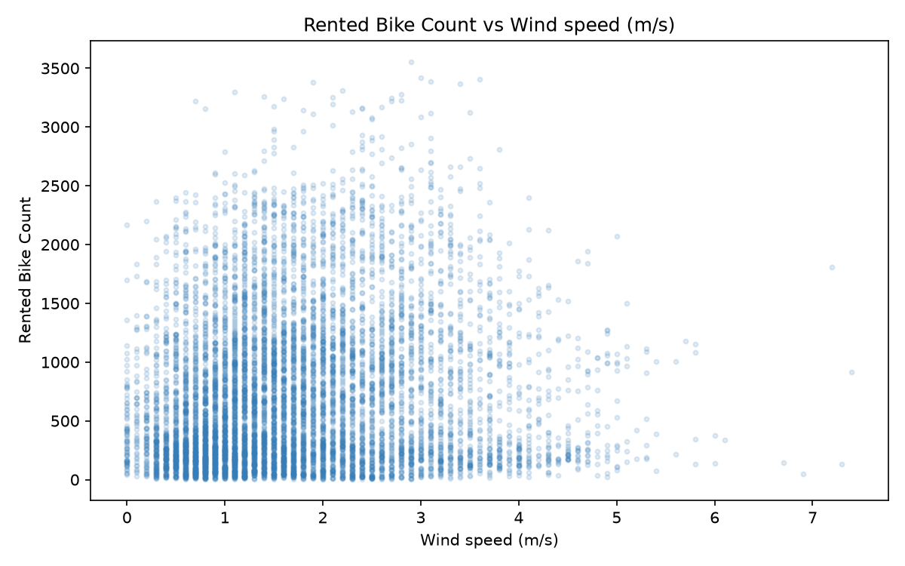
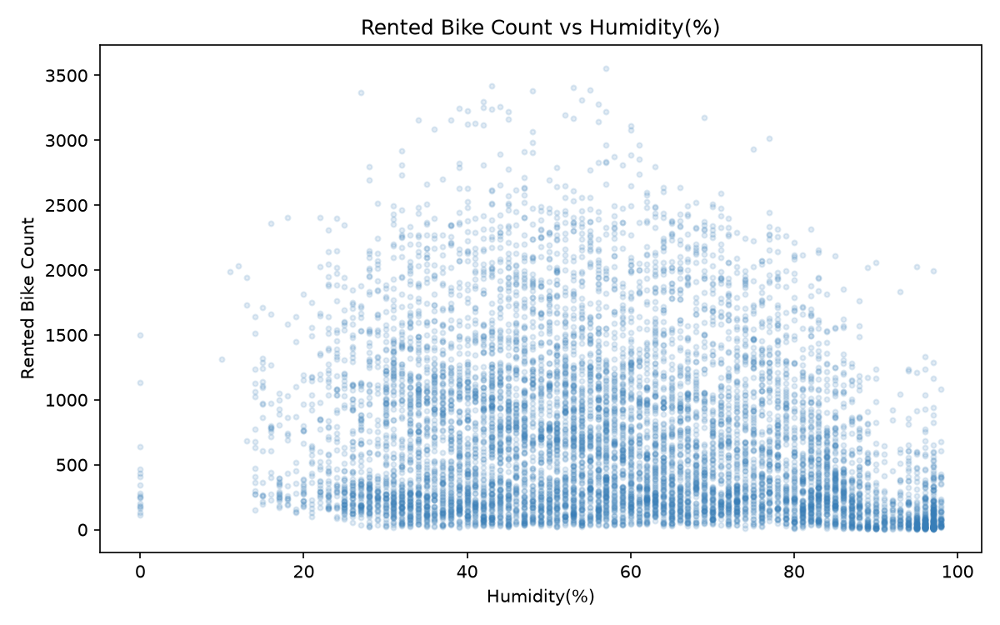
All four correlate more weakly with Rented Bike Count than Temperature or Season do, and three of
the four scatters show no visually obvious trend at all. We see some grouping in the solar radiation plot but the
other three seem very scattered with no clear visible pattern. It is worth highlighting that a low correlation
coefficient or a noisy-looking plot is evidence against a strong effect, but it is not equivalent to a
formal test of "no/very low effect," and it says nothing about non-linear or threshold-shaped relationships that
a scatter plot can hide. The null-hypothesis screen further down runs that formal test for all eleven features.
If features have a strong enough impact on the target variable, we aim to diagnose such relations or otherwise
identify less relevant/impactful features and exclude them from further analysis.
Diagnosis: Why Did It Happen?
Each pattern spotted in the descriptive pass — a seasonal swing, an hourly double-hump, a possible threshold in Humidity, a variable that looked more like a day/night proxy than a genuine weather effect — requires a formal statistical test behind it rather than just eyeballing a plot. We begin our diagnostic analysis with null hypothesis tests for each feature.
Null Hypothesis Tests
Before chasing individual interactions and thresholds, we run one consistent, systematic null hypothesis test across
every feature: H0 = "the feature does not affect Rented Bike Count." Each feature gets
exactly one decision-driving test — a binned Kruskal-Wallis for numeric features (sensitive to
both monotonic and non-monotonic effects, so it catches threshold-shaped and non-linear relationships a plain
correlation would miss), or a zero-vs-nonzero Mann-Whitney U for the heavily zero-inflated ones (Rain, Snow,
where most values are exactly 0 and a quartile split isn't meaningful). Seasons (4 groups) uses Kruskal-Wallis
and Holiday (2 groups) uses Mann-Whitney U for the same reason.
Why measure effect size: p-values give us the probability of observing a particular statistic under the assumption that the null hypothesis is true. When the p-value falls below a certain bar — the predetermined significance level — we reject the null hypothesis. It is worth noting that tiny effects in large samples can be strong enough to reject the null hypothesis even if the practical difference is not large. This is where effect size comes in, quantifying the magnitude of a statistical result in a way that is independent of sample size.
Why measure confidence interval: a confidence interval gives the range in which the true population value would fall X% of the time, if the same estimation procedure were repeated on many random samples from the dataset. Effect size alone is a single point estimate and loses information on how certain we are of that effect — highly variable data can produce a large effect size on one sample that doesn't hold up on the next. A confidence interval makes that variability visible: if it excludes zero, we reject the null hypothesis; if it includes zero, we fail to reject it.
| Feature | Effect size | p-value | 95% CI | Decision |
|---|---|---|---|---|
Temperature(C) | eps²=0.371 | ≈0 | [0.356, 0.386] | Reject H0 |
Seasons | eps²=0.297 | ≈0 | [0.284, 0.310] | Reject H0 |
Hour | eps²=0.241 | ≈0 | [0.226, 0.256] | Reject H0 |
Dew point temperature(C) | eps²=0.191 | ≈0 | [0.178, 0.205] | Reject H0 |
Solar Radiation (MJ/m2) | eps²=0.158 | 2.21×10⁻²⁹² | [0.146, 0.172] | Reject H0 |
Rainfall(mm) | rank-biserial=−0.734 | 2.97×10⁻¹⁷² | [−0.766, −0.700] | Reject H0 |
Snowfall (cm) | rank-biserial=−0.640 | 4.38×10⁻¹¹⁴ | [−0.667, −0.611] | Reject H0 |
Humidity(%) | eps²=0.076 | 2.5×10⁻¹⁴⁰ | [0.066, 0.088] | Reject H0 |
Visibility (10m) | eps²=0.045 | 4.29×10⁻⁸³ | [0.036, 0.054] | Reject H0 |
Holiday | rank-biserial=−0.239 | 3.26×10⁻¹⁶ | [−0.297, −0.179] | Reject H0 |
Wind speed (m/s) | eps²=0.030 | 2.97×10⁻⁵⁶ | [0.024, 0.038] | Reject H0 |
All 11 Features Reject H0
- Every one of the 11 features clears the 95% bar on its own, individually, so none can be written off as pure noise.
- But "statistically distinguishable from zero" and "practically important" are not the same claim — the effect sizes in the table make that gap visible.
- Ranked within their own metric,
Wind speed(eps²=0.030),Visibility(eps²=0.045), andHumidity(%)(eps²=0.076) are the three weakest of the epsilon-squared group by a wide margin — each explains only a few percent of the variance in rentals, versus 0.37 for Temperature or 0.30 for Seasons. Holiday(rank-biserial=−0.239) is similarly the weakest of the rank-biserial group, well short of Rainfall's −0.734 or Snowfall's −0.640.- These four features — Wind speed, Visibility, Humidity, Holiday — are confidently non-zero, but small enough in magnitude that they contribute comparatively little explanatory power: reasonable candidates to deprioritize or drop for parsimony once modeling starts, even though this screen can't formally reject them.
- The null tests above have been done for each feature in isolation — it says nothing about whether the remaining, stronger features are actually independent pieces of information, or whether some of them are just restating each other.
Pairwise Feature Correlation
The null-hypothesis screen above tests each feature against the target, one at a time — it says nothing about whether the features are independent of each other. At an extreme, all 11 features could just be scaled versions of each other, which would mean a lot of redundant information being captured. To remove such redundancy before prescriptive analysis, we aim to find features which are highly correlated and take up more space than the information they add.
Since the 11 features mix numeric and categorical types, there's no single correlation coefficient that applies to every pair — and a numeric×numeric correlation (which has a meaningful sign) isn't really the same kind of number as a categorical association-strength measure (which doesn't). Rather than force all 55 pairs onto one shared color scale, this is split into three separate charts, one per pair-type.
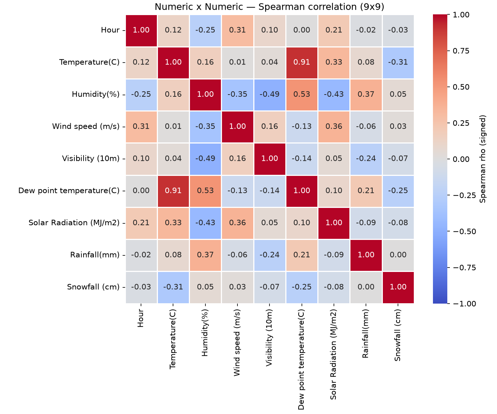
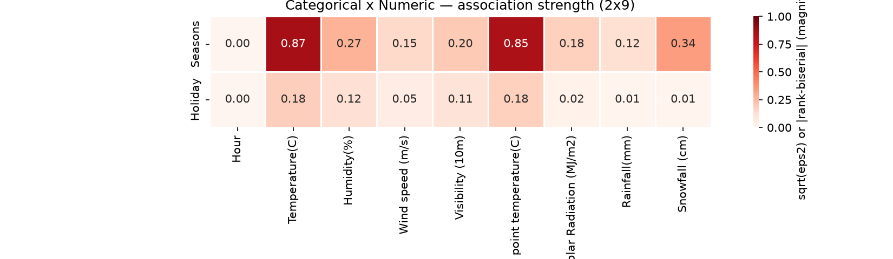
sqrt(epsilon-squared) for Seasons (Kruskal-Wallis, 4
groups) or |rank-biserial| for Holiday (Mann-Whitney U, 2 groups) — magnitude only, since
neither has a meaningful "direction" against a numeric feature.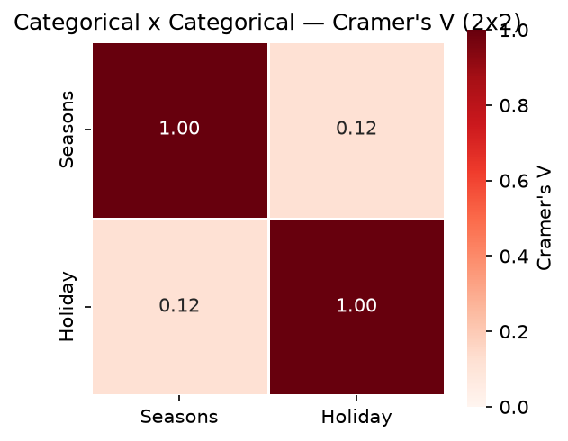
In the numeric×numeric chart, the highest off-diagonal correlation exists between Dew Point and Temperature — we shall see how we can use this to our benefit later. Also note how Humidity is the one feature that has the highest-magnitude correlations. Can we express it in terms of other features? If yes, it can be safely removed from further analysis, especially predictive-model training — or can it? It turns out simplifying your model this way by dropping features is a loss of information that might not be recoverable if the correlated features diverge in the future.
The Hidden Redundancy: What VIF Adds Beyond the Pairwise View
The heatmaps above already showed pairwise association: Temperature↔Dew Point (ρ = 0.914) is the only pair that clears a strict 0.8 threshold, and everything else looks fine on a pair-by-pair basis. But pairwise correlation only catches redundancy between two features at a time. A feature can look only weakly correlated with every other feature individually, while still being almost fully explained by some combination of them. That's exactly what a Variance Inflation Factor (VIF) check is for — and it told a different story:
| Feature | VIF | Flagged (> 10) |
|---|---|---|
Dew point temperature(C) | 117.47 | YES |
Temperature(C) | 88.44 | YES |
Humidity(%) | 20.42 | YES |
Solar Radiation (MJ/m2) | 2.00 | no |
Visibility (10m) | 1.58 | no |
Wind speed (m/s) | 1.27 | no |
Hour | 1.18 | no |
Snowfall (cm) | 1.10 | no |
Rainfall(mm) | 1.09 | no |
Humidity(%) lands at VIF = 20.4 — well past the flag threshold — despite never breaking 0.53 in
any single pairwise correlation. It's not redundant with any one feature; it's redundant with the
combination of Temperature and Dew Point. Pairwise correlation alone would have missed it entirely.
Holiday and No Holiday and the Hourly Pattern
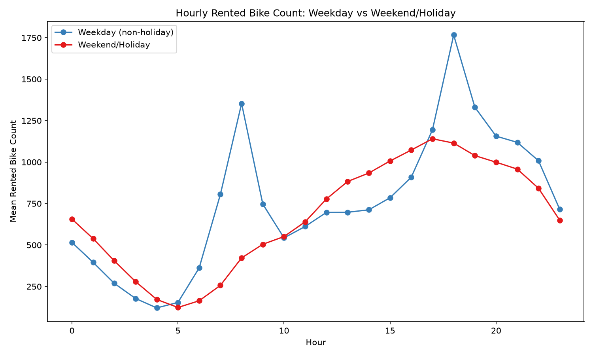
No-Holiday days have a peak around 8:00 that is absent on holidays, giving sufficient reason to believe that the morning commute may be work-driven. However, traffic peaks around 18:00 on all days, leaving it hard to reason about the nature and cause of that commute. Such analysis is not of much interest here, though, so we don't chase it further.
That line plot only shows each hour's mean, though — it says nothing about how much rentals vary around that mean at a given hour. The box-whisker plot below puts No Holiday and Holiday side by side at every hour, showing the median, interquartile range, whiskers, and outliers directly instead of collapsing each hour down to a single point.
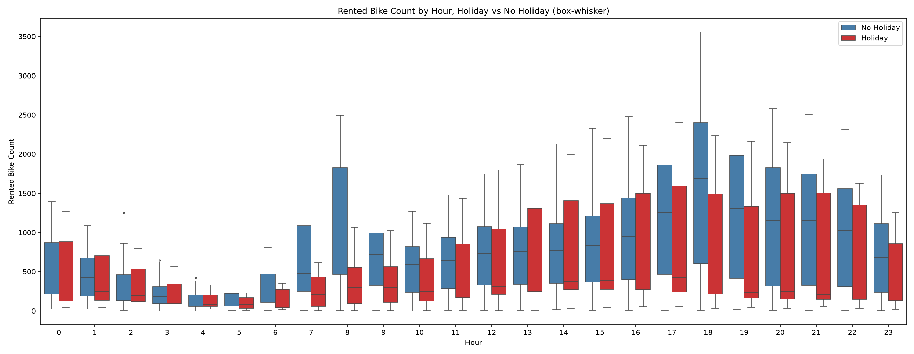
The box plot above visually confirms that the morning traffic on non-holidays is indeed not an illusion of the mean.
Temperature: How Do We Fill In the Missing Values?
478 of the rows kept for analysis have no Temperature(C) reading. Dew point temperature(C)
is a feature which is never missing whenever Temperature is, and which the earlier scatter-plot comparison already
showed tracking Temperature almost in lockstep.
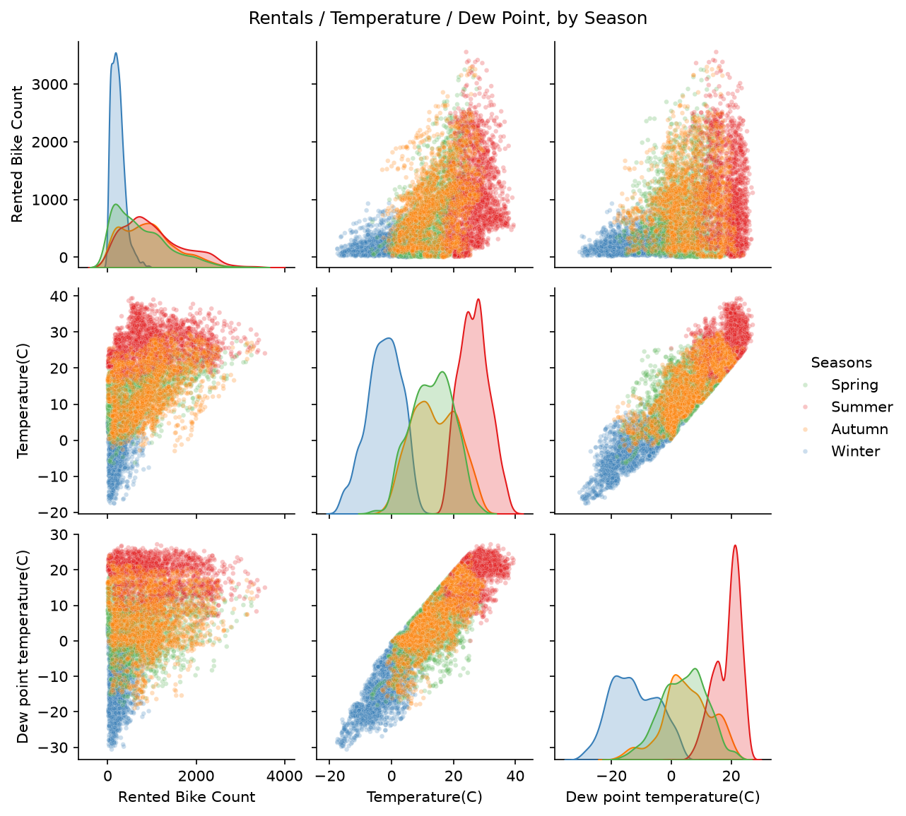
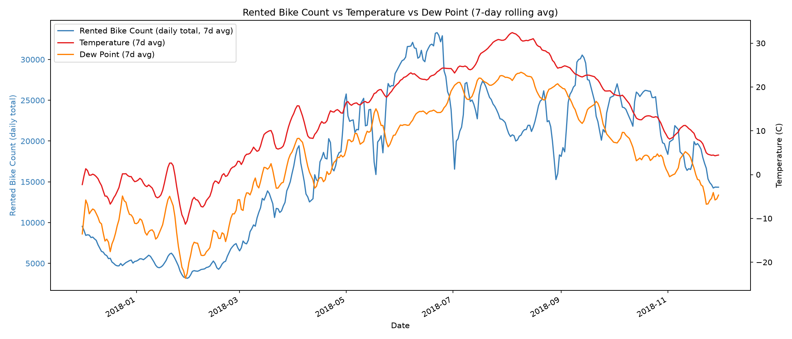
Correlating the two directly: Pearson r = 0.914, Spearman ρ = 0.914 between Temperature(C) and
Dew point temperature(C) (computed on the 7,987 rows where both are observed) — a strong,
near-linear relationship. Fitting an ordinary least squares regression of Temperature on Dew Point over those
same rows gives the equation actually used to fill the missing values:
Temperature(C) ≈ 0.836 × Dew point temperature(C) + 9.471 (R² = 0.836, n = 7,987)
R² = 0.836 means Dew Point alone accounts for about 84% of the variance in Temperature.
This relies on one assumption worth stating explicitly: that Temperature is missing independent of its own (unobserved) value, conditional on Dew Point — not separately tested here. It also understates uncertainty in the imputed rows, since each one gets a single point estimate rather than a distribution.
Rain and Snow: Effect Visualized
Before looking at whether rain and snow suppress rentals, it's worth seeing when each one actually happens across the year. The scatter below plots every rainy hour and every snowy hour by date, colored by season.
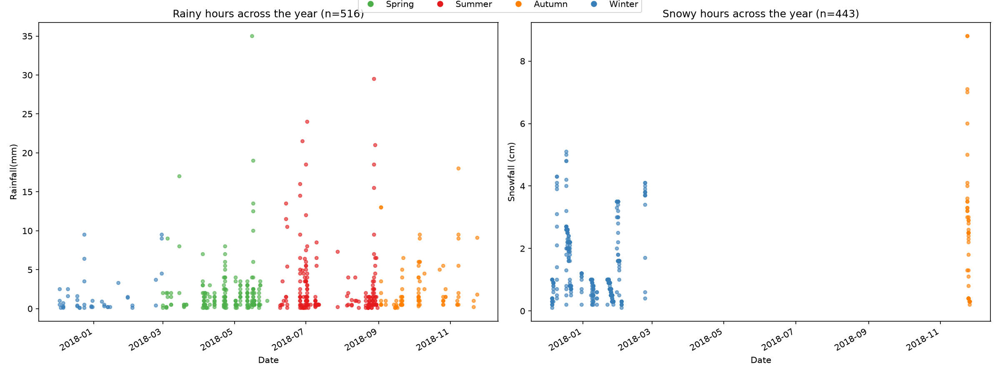
The previous plots on Rainfall and Snowfall give less of an idea of the real impact of rain and snow on rented bike count — they only plotted the rainy/snowy hours in isolation. The swarm plots below aid a comparative study and confirm the impact of rain and snow on rented bike count. A closer look also reveals that rain impacted rented bike count to a lesser extent in summer compared to a higher negative impact in the other seasons. As for snow, its impact seems smaller since rented bike counts in winter are already fairly low.
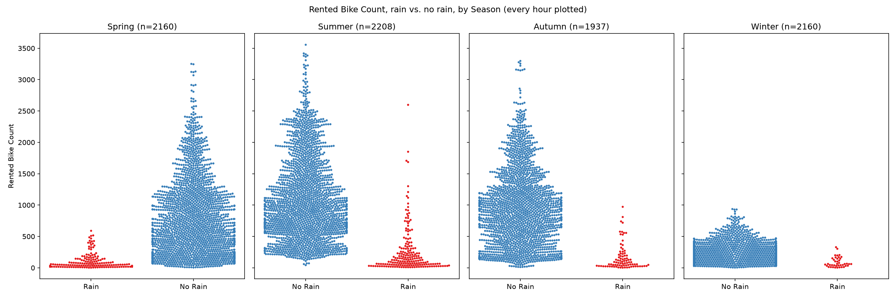
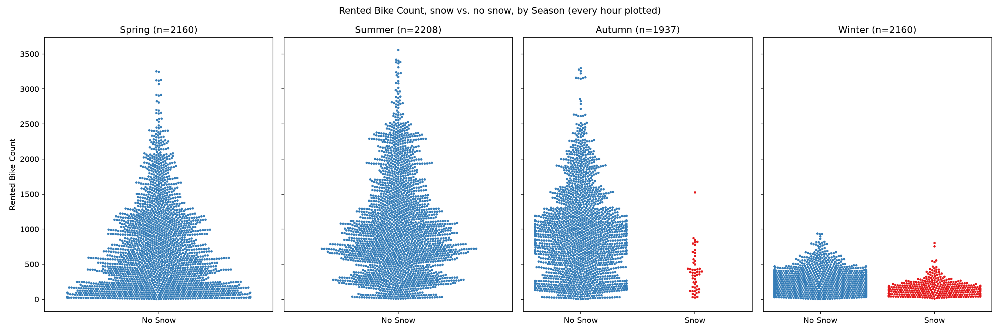
Turning the same per-season comparisons into numbers: a Mann-Whitney U test plus a bootstrap 95% CI on the mean rentals difference, run separately in every season for both Rain and Snow. Seasons where the smaller of the two groups has fewer than 30 observations are flagged explicitly, rather than presenting a CI that looks precise but isn't backed by enough data. It confirms our intuition of the lower additional effect of snow in winter.
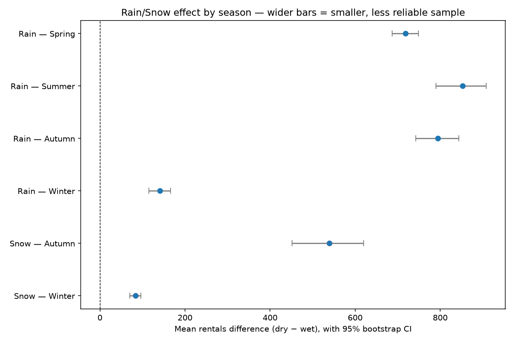
Reading the two visualizations together: Rain's effect held up in all 4 seasons this time (Spring 718, Summer 852, Autumn 795, Winter 141 rentals/hr lower when raining, all with CIs excluding 0), though Winter's estimate is both smaller and — with only 41 rainy hours to work with — the least precisely pinned down. Snow could only be tested in Autumn (540 lower, n=51) and Winter (83 lower, n=392); Spring and Summer simply never have enough snowy hours to test at all, which is itself a finding, not a gap in the analysis.
Summary
Descriptive analysis: Season and Hour are the dominant patterns, with Temperature and Dew Point moving almost as one signal. We plotted the variation of the target feature against each of the other features.
Diagnostic analysis: pinning down causation and correlation.
- Hypothesis tests: all 11 features individually reject H0 at 95% — none can be dismissed as noise, though Wind speed, Visibility, Humidity, and Holiday are the weakest.
- Independence: only Temperature↔Dew Point clears pairwise correlation, but VIF exposes a deeper Temperature/Dew Point/Humidity/Season cluster that pairwise checks alone missed.
- Extra digging: the Temperature↔Dew Point redundancy doubles as the fix for 478 missing Temperature values. We also looked closely at the impact of rain and snow on rented bike count despite the zero-inflation effect.
What's Next
Predictive: forecast Rented Bike Count for a given hour. Feature prep needs to
resolve the Temperature/Dew Point/Humidity collinearity found above (drop one, or lean on a model that isn't
bothered by it) and cyclically encode Hour and one-hot Seasons/Holiday
rather than treating them as plain numbers. A linear regression baseline will make that collinearity decision
matter directly; a tree-based model (Random Forest / Gradient Boosting) sidesteps it and is the planned main
model, evaluated with RMSE/MAE and residual plots broken out by hour and season.
Prescriptive: turn those forecasts into operational calls — how many bikes to allocate or stations to staff, by hour and season. That's deferred until the predictive model exists, since it consumes forecasts rather than raw features, and a feature judged redundant for prediction isn't automatically safe to ignore when a human is making an operational decision from it.
Analysis of the Seoul Bike Sharing dataset (UCI Machine Learning Repository). Diagnostic phase — predictive modeling to follow.